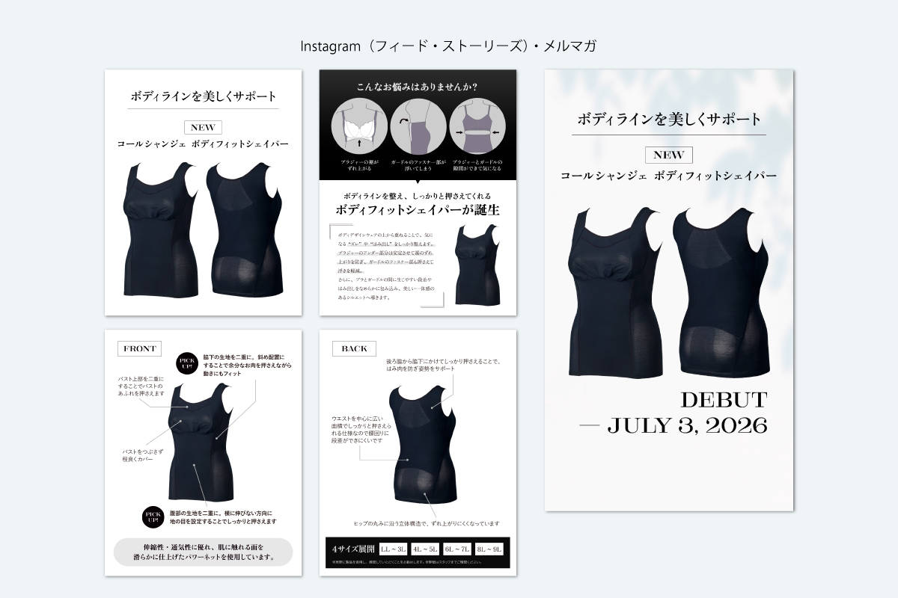

コールシャンジェ ボディフィットシェイパー発売

Instagram投稿
| 制作期間 | 2026年7月 |
| 制作時間 | 約5時間 |
| 依頼元 | MARUKO |
| 媒体 | SNS |
| 使用アプリ | Illustrator |
制作背景・意図
モデル写真のないアイテムをどのように告知するか？を考えて、商品特長資料を参考に、お客様にわかりやすいショッピングサイトの商品ページLPのように悩みの解決から生まれた開発ストーリー、各部位のこだわりの設計を矢印でピックアップ紹介。今までボディデザインウェアで実施してこなかった図式を用い、マルコの商品特長を値段相応の価値としてご理解いただけるデザインを目指しました。
商品自体がダークなワンカラーで、ストーリーズの画像は白背景だとシンプルすぎて寂しさを感じるので、自然光が差し込むニュアンス系素材の背景を使用し、わずかに動きをつけて単調さを削減するように心がけました。
制作した同じ画像をメルマガ配信でも活用する為に、連絡し共有。メルマガ用で画像を別に制作する作業時間を短縮させ、部内の業務の効率化を図りました。